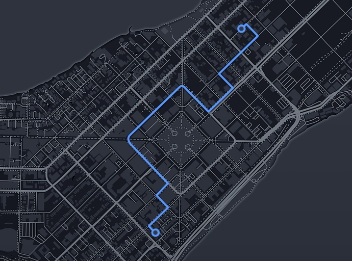

<ion-header>
  <ion-navbar>
    <ion-title>
      About
    </ion-title>
  </ion-navbar>
</ion-header>

<ion-content padding>
<!--<ion-list>

  <ion-item>
    <ion-label>Username</ion-label>
    <ion-input type="text"></ion-input>
  </ion-item>

  <ion-item>
    <ion-label>Password</ion-label>
    <ion-input type="password"></ion-input>
  </ion-item>

</ion-list>

<div padding>
  <button ion-button color="light" round full>Sign In
    
  </button>
</div>-->
<ion-card>

  
  <ion-fab right top>
    <button ion-fab>
      <ion-icon name="pin"></ion-icon>
    </button>
  </ion-fab>

  <ion-item>
    <ion-icon name="football" item-left large></ion-icon>
    <h2>Museum of Football</h2>
    <p>11 N. Way St, Madison, WI 53703</p>
  </ion-item>

  <ion-item>
    <ion-icon name="wine" item-left large ></ion-icon>
    <h2>Institute of Fine Cocktails</h2>
    <p>14 S. Hop Avenue, Madison, WI 53703</p>
  </ion-item>

  <ion-item>
    <span item-left>18 min</span>
    <span item-left>(2.6 mi)</span>
    <button ion-button icon-left clear item-right>
      <ion-icon name="navigate"></ion-icon>
      Start
    </button>
  </ion-item>

</ion-card>
</ion-content>


